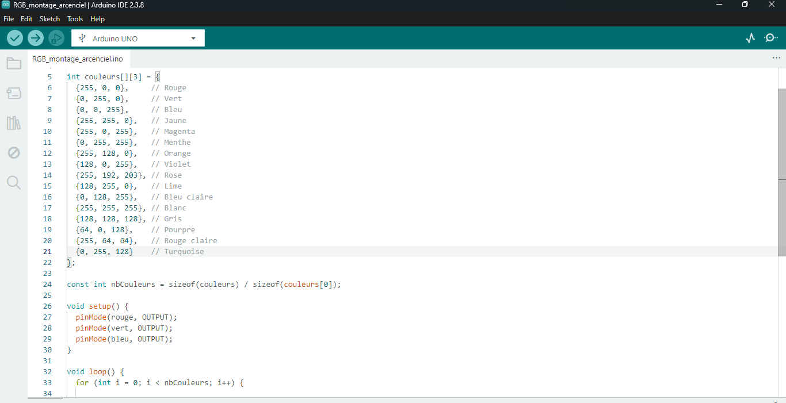
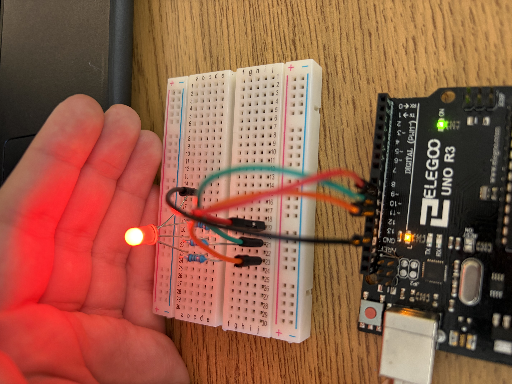
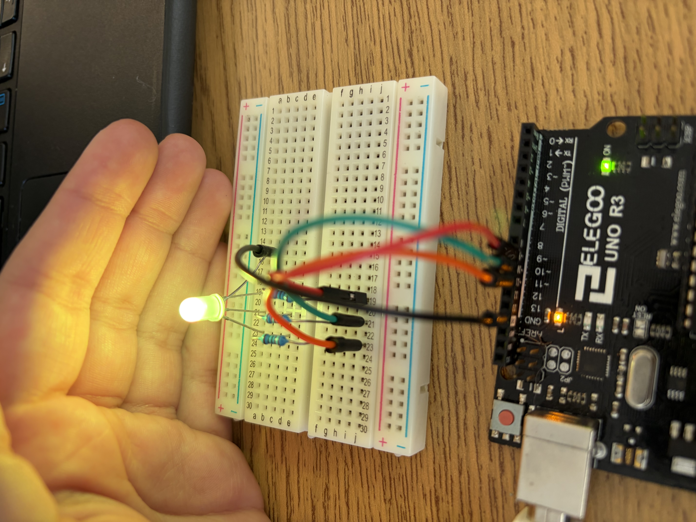

J'ai écrit un algoritme dans Arduino qui permet à une diode électroluminescente multicolor de changer de couleur dans une séquence en continu. J'ai défini un tableau qui contient les code de couleur RGB en tableau de 3 éléments pour 16 couleurs. Dans la fonction loop, je change la couleur de la DEL multicolor à l'aide d'une boucle for et j'ai compté le nombre de couleurs en divisant la taille du tableau des couleurs par la taille d'un seul tableau qui contient les valeurs RGB. Ceci est montré dans la première image. Dans le montage, j'ai aussi utilisé un résistor de 220 Ohm pour chaque patte de la DEL multicolor.
J'ai appris durant ce travail à coder en Arduino qui est un type de langage C modifié, j'ai appris le code de couleur RGB et le branchage d'une diode avec 4 broches en utilisant les broches PWM sur le microcontrôleur Arduino. Je pourrais utiliser ce code pour faire une lampe à lave, ou un appareil de décoration.


À gauche la DEL multicolor est allumée en rouge et à droite elle est allumée en jaune.